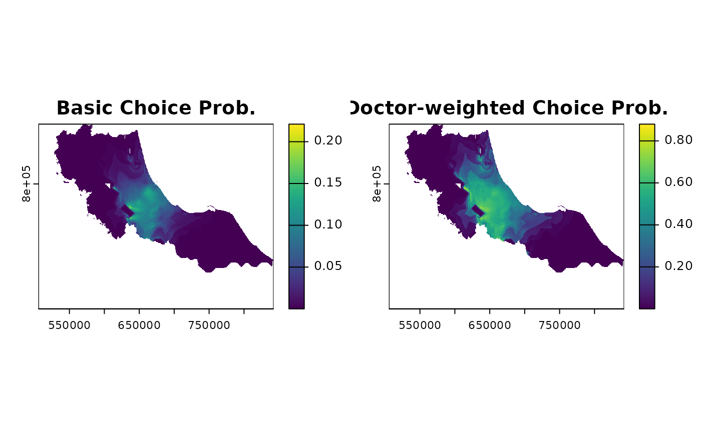

Converts spatial weights to choice probabilities. When used with attractiveness values, implements Huff model logic. Without attractiveness, behaves like standard weight normalization.
Arguments
- weights
Multi-layer SpatRaster of spatial weights (e.g., from calc_decay)
- attractiveness
Optional numeric vector of facility attractiveness values
- alpha
Numeric parameter for attractiveness sensitivity (default = 1)
- a0
Non-negative numeric value representing outside option weight (default = 0)
- snap
Logical; if TRUE enables fast computation mode with: - Minimal validation - Essential preprocessing only - No name/attribute assignment Only use when inputs are known to be valid.
Examples
library(terra)
#> terra 1.8.5
# Using pre-computed isochrone distances and hospital data
distance_raster <- rast(hos_iscr) # Already lazy loaded in raster format
# Calculate decay weights using gaussian decay
weights <- calc_decay(distance_raster, method = "gaussian", sigma = 30)
# Basic usage (equivalent to calc_normalize)
p1 <- calc_choice(weights)
# With Huff model using number of doctors as attractiveness
p2 <- calc_choice(weights,
attractiveness = hc12_hos$s_doc, # Number of doctors
alpha = 1.5
)
# Plot to compare
par(mfrow = c(1, 2)) # Set up 2 panels side by side
plot(p1[[1]], main = "Basic Choice Prob.")
plot(p2[[1]], main = "Doctor-weighted Choice Prob.")

# With outside option (a0)
p3 <- calc_choice(weights,
attractiveness = hc12_hos$s_doc,
a0 = 0.1
)